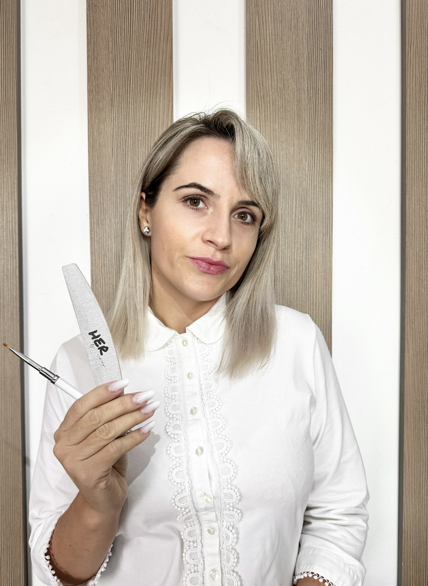

Despre NailTech Magic by Andrada
✨ Cine sunt eu în spatele manichiurilor frumoase✨
Eu sunt Andrada 🤍, și în spatele fiecărei manichiuri stau ore de pasiune, muncă și dorința de a aduce un strop de frumusețe în viața fiecărei femei care trece pragul meu.
Am pornit acest drum acum mai bine de 2 ani, cu mult entuziasm și emoții. Totul a început din iubirea pentru detalii și din bucuria pe care o simțeam atunci când vedeam cât de mult poate schimba un simplu design starea unei persoane.
💅Pentru mine, manichiura nu înseamnă doar unghiile perfecte – înseamnă încredere, feminitate și timp pentru tine.
🌸 Înseamnă să te oprești puțin din agitația zilnică și să îți oferi un moment de răsfăț, știind că meriți să strălucești.
Astăzi, privind în urmă, sunt recunoscătoare pentru fiecare clientă care mi-a oferit încrederea ei. Voi sunteți inspirația mea și motivul pentru care continui să învăț, să cresc și să creez magie la fiecare întâlnire.
✨🤠Eu sunt Andrada. O fată cu vise mari, cu mâini care muncesc cu drag și cu un suflet care pune pasiune în fiecare detaliu.
Filosofia mea
Fiecare programare este personalizată. Nu lucrez la bandă — timpul și atenția pe care ți le acord sunt esențiale pentru rezultate durabile și aspectul pe care ți-l dorești. Folosesc doar produse profesionale și tehnici sigure, adaptate nevoilor tale.
Experiență & Certificări
Am peste 50 de diplome obținute de la traineri renumiți din domeniu și experiență vastă în manichiură rusească, construcție gel, french, artă 3D și multe alte tehnici avansate. Colaborez cu furnizori profesioniști pentru a avea acces la cele mai bune materiale din industrie.
- Peste 50 de diplome în nail art & tehnici avansate
- 755+ recenzii cu 5 stele pe Mero
- Cursuri fizice pentru viitori nail technicians
- Studio privat în Baciu, Cluj
- Focus pe igienă, sterilizare și siguranță
De ce să alegi NailTech Magic?
Aici nu găsești graba sau compromisurile. Găsești:
- Lucru precis la cuticulă, fără durere
- Structură naturală și luciu de durată
- Design personalizat — de la minimalist la spectaculos
- Atmosferă liniștită și intimă
- Transparență totală: prețuri clare, așteptări realiste
Recenzii Clienți
Peste 700 de clienți mulțumiți care se întorc pentru îngrijire de calitate și rezultate impecabile.
Program
- Luni–Vineri: 9:00–19:00
- Sâmbǎtǎ–Duminică: Închis
Program flexibil disponibil la cerere. Pentru urgențe sau programări speciale, contactează-mă pe Instagram sau Facebook.
Locație
Baciu, Cluj
Strada Ciocârliei 1
Intrare din Strada Privighetorii
La 10 minute de Cluj-Napoca, acces ușor cu mașina, parcare disponibilă.
Vezi pe hartă (Mero)Urmărește-mă
Pentru inspirație zilnică, portofoliu și oferte speciale:
→ Instagram → Facebook